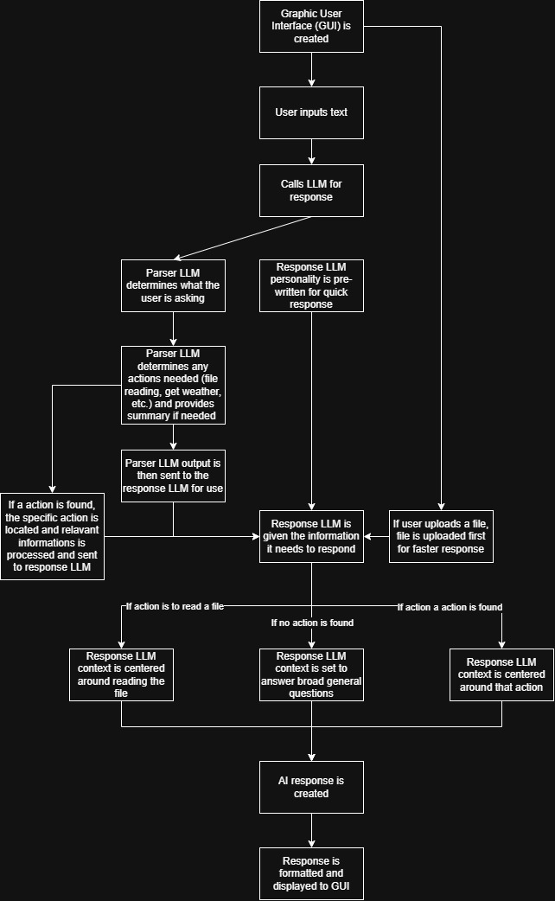

A character-driven AI assistant that combines conversation, memory, document understanding,
and practical tool use into a more personal and capable user experience.
Conversational
Personality-aware responses with preserved context and tone.
Grounded
Uses uploaded files and retrieval to answer with relevant context.
Extensible
Built to support external tools and future assistant capabilities.
What Nyx Does
Nyx explores what happens when an assistant feels less like a one-off chatbot and more like a
long-term companion. The project combines large language models, persistent memory, retrieval
over uploaded documents, and tool integrations to support richer and more useful conversations.
Core Features
Conversational AI
Character-driven responses with a consistent voice
Context-aware dialogue using conversation history
Relationship cues informed by tone and sentiment
Persistent Memory
Remembers user preferences, favorites, and personal details
Stores conversation history for longer-term continuity
Retrieves saved memory to personalize future interactions
Document Understanding
Supports TXT, PDF, and DOCX uploads
Uses chunking and embeddings for retrieval
Answers questions with retrieval-augmented generation
Tool Integration
Connects to external services such as weather APIs
Uses file-processing tools to expand assistant utility
Designed with room for future tool expansion
Why This Project Stands Out
Nyx is not just answering prompts. It is designed to remember, adapt, and feel continuous across interactions.
The project blends personality design with practical capabilities like retrieval, files, and tool use.
It serves as both a technical AI system and a design experiment in human-assistant relationships.
Architecture
The system routes user input through conversation handling, memory, retrieval, and tool logic so Nyx
can respond with both personality and grounded context.

Project Log
A detailed development record is available for reviewers who want to inspect the full build process.
Technology Stack
Nyx is built as a Python-based assistant system that combines local model support, retrieval workflows,
desktop UI development, and external API access.